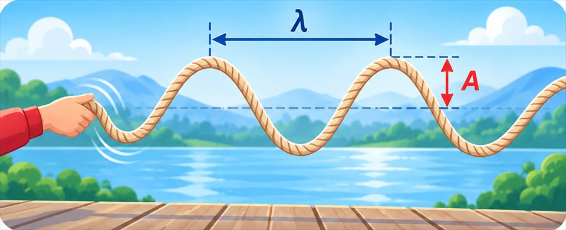
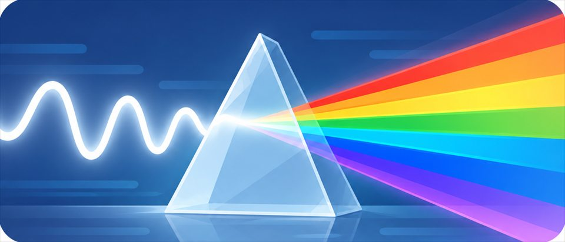

The big idea driving this unit
Waves carry energy, not matter, and their amplitude, wavelength, and frequency explain what we hear and see, from pitch and loudness to color. From talking drums to fiber optic cables, information travels as patterns encoded into waves, and digital signals hold up best against noise.
Chapters in this unit
-
1

Intro to Wave PropertiesRipples from a pebble spread across a pond, yet a floating duck only bobs up and down, so what does a wave actually carry, and what measurements describe every wave?MS-PS4-1 -
2

Light WavesLight can cross empty space from the Sun, bounce off a mirror, and split into a rainbow, so what makes light different from sound, and what decides the colors we see?MS-PS4-2 - 3 Waves & Information TechnologyA vinyl record and a streamed song can play the same music, so why does the digital version survive scratches, copies, and distance so much better than the analog one?MS-PS4-3